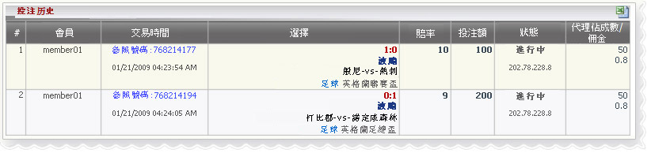

波膽
定義:
查看代理贏輸根據占成注單投注種類之波膽．這份報告是由每個交易分開，包含所有該交易的詳細資料．

波膽
- 在上面的數字:
- 第一注單：會員帳號〞member01", 參考號碼 : 768214177 交易日期 :01/21/2009,投注種類：波膽,比分:1-0,賽事 〞波恩利-vs-托特納姆熱刺〞，
聯賽：英格蘭聯賽盃，賠率 = 10,金額 = 100, 代理占成 = 50%
- 第二注單：會員帳號〞member01", 參考號碼 : 768214194 交易日期 :01/21/2009,投注種類：波膽,比分:0-1,賽事 〞 打比郡-vs- 諾丁漢森林〞，
聯賽：英格蘭聯賽盃，賠率 = 9,金額 = 200, 代理占成 = 50%